In another vignette, we introduced the “marginal effect” as a partial derivative. Since derivatives are only properly defined for continuous variables, we cannot use them to interpret the effects of changes in categorical variables. For this, we turn to contrasts between Adjusted predictions. In the context of this package, a “Contrast” is defined as:
A difference, ratio, or function of adjusted predictions, calculated for meaningfully different predictor values (e.g., College graduates vs. Others).
The slopes() function automatically calculates contrasts instead of derivatives for factor, logical, or character variables.
The comparisons() function gives users more powerful features to compute different contrasts, such as differences, risk ratios, linear combinations, and transformations.
Simple example: Titanic
Consider a logistic regression model estimated using the Titanic mortality data:
library(marginaleffects)
dat <- "https://vincentarelbundock.github.io/Rdatasets/csv/Stat2Data/Titanic.csv"
dat <- read.csv(dat)
mod <- glm(Survived ~ PClass * SexCode * Age, data = dat, family = binomial)The question that interests us is:
How does the probability of survival (outcome) change if a passenger travels in 1st class vs. 3rd class?
The answer to that question is not straightforward because, in non-linear models with interactions, the effect of a change in one variable depends on the values of all the other covariates in the model. Therefore, we need to refine the question:
How does the probability of survival (outcome) change if a 25 year old man travels in 1st class vs. 3rd class?
Here, the estimand is the difference in probabilities for PClass="1st" and PClass="3rd", and this estimand is conditional on the values of the covariates Age=25 and SexCode=1. In the comparisons() function, the variables argument determines the scientific query (estimand or comparison), and the newdata argument determines where we estimate this query (conditional on what covariate values). For example:
comparisons(
mod,
variables = list(PClass = c("3rd", "1st")),
newdata = datagrid(Age = 25, SexCode = 0))
#>
#> Term Contrast Estimate Std. Error z Pr(>|z|) 2.5 % 97.5 % Age SexCode
#> PClass 1st - 3rd 0.3918 0.07491 5.23 1.6947e-07 0.245 0.5386 25 0
#>
#> Prediction type: response
#> Columns: rowid, type, term, contrast, estimate, std.error, statistic, p.value, conf.low, conf.high, predicted, predicted_hi, predicted_lo, Survived, PClass, Age, SexCodeWe can compute the same contrast for different “kinds” of individuals, by changing the datagrid() call. This function accepts functions or vectors. Here, we compute the contrast between the probabilities of survival in 1st and 3rd class for the oldest men and women passengers:
comparisons(
mod,
variables = list(PClass = c("3rd", "1st")),
newdata = datagrid(Age = range, SexCode = 0:1))
#>
#> Term Contrast Estimate Std. Error z Pr(>|z|) 2.5 % 97.5 % Age SexCode
#> PClass 1st - 3rd 0.44260 0.14818 2.987 0.00281726 0.15218 0.7330 0.17 0
#> PClass 1st - 3rd 0.47018 0.13297 3.536 0.00040642 0.20956 0.7308 0.17 1
#> PClass 1st - 3rd 0.07107 0.04533 1.568 0.11690206 -0.01777 0.1599 71.00 0
#> PClass 1st - 3rd 0.52411 0.20599 2.544 0.01094812 0.12038 0.9278 71.00 1
#>
#> Prediction type: response
#> Columns: rowid, type, term, contrast, estimate, std.error, statistic, p.value, conf.low, conf.high, predicted, predicted_hi, predicted_lo, Survived, PClass, Age, SexCodeIf we do not specify the newdata argument, then comparisons() will calculate the contrast for every single combination of covariate values in the original data. This means that we will obtain a data frame of results with the same number of rows as the original data. This makes sense, because in non-linear models or in models with interactions, each individual can have a different contrast:
cmp <- comparisons(
mod,
variables = list(PClass = c("3rd", "1st")))
# number of contrast estimates
nrow(cmp)
#> [1] 756
# number of observations in the model
nobs(mod)
#> [1] 756A big dataset of contrasts like this one can be unwieldy. A common strategy is to summarize the unit-level contrasts by taking their average. This can be achieved using the avg_comparisons() function or the by argument:
avg_comparisons(mod, by = "PClass")
#>
#> Term Contrast PClass Estimate Std. Error z Pr(>|z|) 2.5 % 97.5 %
#> PClass mean(2nd) - mean(1st) 1st -0.200686 0.036485 -5.500 3.7873e-08 -0.272195 -0.129176
#> PClass mean(2nd) - mean(1st) 2nd -0.217672 0.041560 -5.238 1.6276e-07 -0.299128 -0.136215
#> PClass mean(2nd) - mean(1st) 3rd -0.246775 0.050681 -4.869 1.1207e-06 -0.346108 -0.147442
#> PClass mean(3rd) - mean(1st) 1st -0.367209 0.044051 -8.336 < 2.22e-16 -0.453548 -0.280871
#> PClass mean(3rd) - mean(1st) 2nd -0.406367 0.043521 -9.337 < 2.22e-16 -0.491667 -0.321068
#> PClass mean(3rd) - mean(1st) 3rd -0.408779 0.049654 -8.233 < 2.22e-16 -0.506099 -0.311459
#> SexCode mean(1) - mean(0) 1st 0.589466 0.045990 12.817 < 2.22e-16 0.499327 0.679606
#> SexCode mean(1) - mean(0) 2nd 0.704701 0.045534 15.476 < 2.22e-16 0.615456 0.793946
#> SexCode mean(1) - mean(0) 3rd 0.293547 0.056171 5.226 1.7325e-07 0.183454 0.403639
#> Age mean(+1) 1st -0.005706 0.001476 -3.865 0.00011097 -0.008599 -0.002813
#> Age mean(+1) 2nd -0.009270 0.001734 -5.346 8.9948e-08 -0.012669 -0.005871
#> Age mean(+1) 3rd -0.004256 0.002113 -2.014 0.04401973 -0.008399 -0.000114
#>
#> Prediction type: response
#> Columns: type, term, contrast, PClass, estimate, std.error, statistic, p.value, conf.low, conf.high, predicted, predicted_hi, predicted_lo
avg_comparisons(mod, variables = "SexCode", by = "PClass")
#>
#> Term Contrast PClass Estimate Std. Error z Pr(>|z|) 2.5 % 97.5 %
#> SexCode mean(1) - mean(0) 1st 0.5895 0.04599 12.817 < 2.22e-16 0.4993 0.6796
#> SexCode mean(1) - mean(0) 2nd 0.7047 0.04553 15.476 < 2.22e-16 0.6155 0.7939
#> SexCode mean(1) - mean(0) 3rd 0.2935 0.05617 5.226 1.7325e-07 0.1835 0.4036
#>
#> Prediction type: response
#> Columns: type, term, contrast, PClass, estimate, std.error, statistic, p.value, conf.low, conf.high, predicted, predicted_hi, predicted_loNote that average contrasts often have a nice interpretation in a causal inference context, as the outcome of parametric g-formula estimation. See this vignette: https://vincentarelbundock.github.io/marginaleffects/articles/gformula.html
The rest of this vignette highlights some of the other features of the very flexible and powerful comparisons() function.
Predictor types
Logical and factor predictors
Consider a simple model with a logical and a factor variable:
library(marginaleffects)
tmp <- mtcars
tmp$am <- as.logical(tmp$am)
mod <- lm(mpg ~ am + factor(cyl), tmp)The comparisons function automatically computes contrasts for each level of the categorical variables, relative to the baseline category (FALSE for logicals, and the reference level for factors), while holding all other values at their observed values. The avg_comparisons() does the same, but then marginalizes by taking the average of unit-level estimates:
cmp <- avg_comparisons(mod)
cmp
#>
#> Term Contrast Estimate Std. Error z Pr(>|z|) 2.5 % 97.5 %
#> am TRUE - FALSE 2.560 1.298 1.973 0.04851 0.01675 5.103
#> cyl 6 - 4 -6.156 1.536 -4.009 6.1077e-05 -9.16608 -3.146
#> cyl 8 - 4 -10.068 1.452 -6.933 4.1146e-12 -12.91359 -7.222
#>
#> Prediction type: response
#> Columns: type, term, contrast, estimate, std.error, statistic, p.value, conf.low, conf.highThe summary printed above says that moving from the reference category 4 to the level 6 on the cyl factor variable is associated with a change of -6.156 in the adjusted prediction. Similarly, the contrast from FALSE to TRUE on the am variable is equal to 2.560.
We can obtain different contrasts by using the comparisons() function. For example:
avg_comparisons(mod, variables = list(cyl = "sequential"))
#>
#> Term Contrast Estimate Std. Error z Pr(>|z|) 2.5 % 97.5 %
#> cyl 6 - 4 -6.156 1.536 -4.009 6.1077e-05 -9.166 -3.146
#> cyl 8 - 6 -3.911 1.470 -2.660 0.0078051 -6.793 -1.030
#>
#> Prediction type: response
#> Columns: type, term, contrast, estimate, std.error, statistic, p.value, conf.low, conf.high
avg_comparisons(mod, variables = list(cyl = "pairwise"))
#>
#> Term Contrast Estimate Std. Error z Pr(>|z|) 2.5 % 97.5 %
#> cyl 6 - 4 -6.156 1.536 -4.009 6.1077e-05 -9.166 -3.146
#> cyl 8 - 4 -10.068 1.452 -6.933 4.1146e-12 -12.914 -7.222
#> cyl 8 - 6 -3.911 1.470 -2.660 0.0078051 -6.793 -1.030
#>
#> Prediction type: response
#> Columns: type, term, contrast, estimate, std.error, statistic, p.value, conf.low, conf.high
avg_comparisons(mod, variables = list(cyl = "reference"))
#>
#> Term Contrast Estimate Std. Error z Pr(>|z|) 2.5 % 97.5 %
#> cyl 6 - 4 -6.156 1.536 -4.009 6.1077e-05 -9.166 -3.146
#> cyl 8 - 4 -10.068 1.452 -6.933 4.1146e-12 -12.914 -7.222
#>
#> Prediction type: response
#> Columns: type, term, contrast, estimate, std.error, statistic, p.value, conf.low, conf.highFor comparison, this code produces the same results using the emmeans package:
library(emmeans)
emm <- emmeans(mod, specs = "cyl")
contrast(emm, method = "revpairwise")
#> contrast estimate SE df t.ratio p.value
#> cyl6 - cyl4 -6.16 1.54 28 -4.009 0.0012
#> cyl8 - cyl4 -10.07 1.45 28 -6.933 <.0001
#> cyl8 - cyl6 -3.91 1.47 28 -2.660 0.0331
#>
#> Results are averaged over the levels of: am
#> P value adjustment: tukey method for comparing a family of 3 estimates
emm <- emmeans(mod, specs = "am")
contrast(emm, method = "revpairwise")
#> contrast estimate SE df t.ratio p.value
#> TRUE - FALSE 2.56 1.3 28 1.973 0.0585
#>
#> Results are averaged over the levels of: cylNote that these commands also work on for other types of models, such as GLMs, on different scales:
mod_logit <- glm(am ~ factor(gear), data = mtcars, family = binomial)
avg_comparisons(mod_logit)
#>
#> Term Contrast Estimate Std. Error z Pr(>|z|) 2.5 % 97.5 %
#> gear 4 - 3 0.6667 1.361e-01 4.899 9.6296e-07 0.4 0.9334
#> gear 5 - 3 1.0000 1.071e-05 93335.530 < 2.22e-16 1.0 1.0000
#>
#> Prediction type: response
#> Columns: type, term, contrast, estimate, std.error, statistic, p.value, conf.low, conf.high
avg_comparisons(mod_logit, type = "link")
#>
#> Term Contrast Estimate Std. Error z Pr(>|z|) 2.5 % 97.5 %
#> gear 4 - 3 21.26 4578 0.004644 0.99629 -8951 8994
#> gear 5 - 3 41.13 9156 0.004492 0.99642 -17904 17986
#>
#> Prediction type: link
#> Columns: type, term, contrast, estimate, std.error, statistic, p.value, conf.low, conf.highCharacter predictors
All functions of the marginaleffects package attempt to treat character predictors as factor predictors. However, using factors instead of characters when modeling is strongly encouraged, because they are much safer and faster. This is because factors hold useful information about the full list of levels, which makes them easier to track and handle internally by marginaleffects. Users are strongly encouraged to convert their character variables to factor before fitting their models and using slopes functions.
Numeric predictors
We can also compute contrasts for differences in numeric variables. For example, we can see what happens to the adjusted predictions when we increment the hp variable by 1 unit (default) or by 5 units:
mod <- lm(mpg ~ hp, data = mtcars)
avg_comparisons(mod)
#>
#> Term Contrast Estimate Std. Error z Pr(>|z|) 2.5 % 97.5 %
#> hp +1 -0.06823 0.01012 -6.742 1.558e-11 -0.08806 -0.04839
#>
#> Prediction type: response
#> Columns: type, term, contrast, estimate, std.error, statistic, p.value, conf.low, conf.high
avg_comparisons(mod, variables = list(hp = 5))
#>
#> Term Contrast Estimate Std. Error z Pr(>|z|) 2.5 % 97.5 %
#> hp +5 -0.3411 0.0506 -6.742 1.558e-11 -0.4403 -0.242
#>
#> Prediction type: response
#> Columns: type, term, contrast, estimate, std.error, statistic, p.value, conf.low, conf.highCompare adjusted predictions for a change in the regressor between two arbitrary values:
avg_comparisons(mod, variables = list(hp = c(90, 110)))
#>
#> Term Contrast Estimate Std. Error z Pr(>|z|) 2.5 % 97.5 %
#> hp 110 - 90 -1.365 0.2024 -6.742 1.558e-11 -1.761 -0.9679
#>
#> Prediction type: response
#> Columns: type, term, contrast, estimate, std.error, statistic, p.value, conf.low, conf.highCompare adjusted predictions when the regressor changes across the interquartile range, across one or two standard deviations about its mean, or from across its full range:
avg_comparisons(mod, variables = list(hp = "iqr"))
#>
#> Term Contrast Estimate Std. Error z Pr(>|z|) 2.5 % 97.5 %
#> hp Q3 - Q1 -5.697 0.845 -6.742 1.558e-11 -7.353 -4.041
#>
#> Prediction type: response
#> Columns: type, term, contrast, estimate, std.error, statistic, p.value, conf.low, conf.high
avg_comparisons(mod, variables = list(hp = "sd"))
#>
#> Term Contrast Estimate Std. Error z Pr(>|z|) 2.5 % 97.5 %
#> hp (x + sd/2) - (x - sd/2) -4.678 0.6938 -6.742 1.558e-11 -6.038 -3.318
#>
#> Prediction type: response
#> Columns: type, term, contrast, estimate, std.error, statistic, p.value, conf.low, conf.high
avg_comparisons(mod, variables = list(hp = "2sd"))
#>
#> Term Contrast Estimate Std. Error z Pr(>|z|) 2.5 % 97.5 %
#> hp (x - sd) - (x + sd) -9.356 1.388 -6.742 1.558e-11 -12.08 -6.636
#>
#> Prediction type: response
#> Columns: type, term, contrast, estimate, std.error, statistic, p.value, conf.low, conf.high
avg_comparisons(mod, variables = list(hp = "minmax"))
#>
#> Term Contrast Estimate Std. Error z Pr(>|z|) 2.5 % 97.5 %
#> hp Max - Min -19.31 2.864 -6.742 1.558e-11 -24.92 -13.7
#>
#> Prediction type: response
#> Columns: type, term, contrast, estimate, std.error, statistic, p.value, conf.low, conf.highInteractions and Cross-Contrasts
In some contexts we are interested in whether the “effect” of a variable changes, as a function of another variable. A very simple strategy to tackle this question is to estimate a model with a multiplicative interaction like this one:
Calling avg_comparisons() with the by argument shows that the estimated comparisons differ based on cyl:
avg_comparisons(mod, variables = "am", by = "cyl")
#>
#> Term Contrast cyl Estimate Std. Error z Pr(>|z|) 2.5 % 97.5 %
#> am mean(1) - mean(0) 6 1.442 2.316 0.6225 0.533612 -3.097 5.981
#> am mean(1) - mean(0) 4 5.175 2.053 2.5209 0.011706 1.151 9.199
#> am mean(1) - mean(0) 8 0.350 2.316 0.1511 0.879875 -4.189 4.889
#>
#> Prediction type: response
#> Columns: type, term, contrast, cyl, estimate, std.error, statistic, p.value, conf.low, conf.high, predicted, predicted_hi, predicted_loHowever, using the hypothesis argument for pairwise contrasts between the above comparisons reveals that the heterogeneity is not statistically significant:
avg_comparisons(mod, variables = "am", by = "cyl", hypothesis = "pairwise")
#>
#> Term Estimate Std. Error z Pr(>|z|) 2.5 % 97.5 %
#> (6,am,mean(1) - mean(0)) - (4,am,mean(1) - mean(0)) -3.733 3.095 -1.2063 0.22769 -9.799 2.332
#> (6,am,mean(1) - mean(0)) - (8,am,mean(1) - mean(0)) 1.092 3.275 0.3333 0.73890 -5.328 7.511
#> (4,am,mean(1) - mean(0)) - (8,am,mean(1) - mean(0)) 4.825 3.095 1.5591 0.11898 -1.241 10.891
#>
#> Prediction type: response
#> Columns: type, term, estimate, std.error, statistic, p.value, conf.low, conf.highIn other contexts, we are interested in a “cross-contrast” or “cross-comparisons”; we would like to know what happens when two (or more) predictors change at the same time. To assess this, we can specify the regressors of interest in the variables argument, and set the cross=TRUE:
avg_comparisons(mod, variables = c("cyl", "am"), cross = TRUE)
#>
#> C: cyl C: am Estimate Std. Error z Pr(>|z|) 2.5 % 97.5 %
#> 6 - 4 1 - 0 -2.333 2.476 -0.9424 0.3459644 -7.186 2.519
#> 8 - 4 1 - 0 -7.500 2.768 -2.7095 0.0067389 -12.925 -2.075
#>
#> Prediction type: response
#> Columns: type, term, contrast_cyl, contrast_am, estimate, std.error, statistic, p.value, conf.low, conf.highQuantities of interest
This section compares 4 quantities:
- Unit-Level Contrasts
- Average Contrast
- Contrast at the Mean
- Contrast Between Marginal Means
The ideas discussed in this section focus on contrasts, but they carry over directly to analogous types of marginal effects.
Unit-level contrasts
In models with interactions or non-linear components (e.g., link function), the value of a contrast or marginal effect can depend on the value of all the predictors in the model. As a result, contrasts and marginal effects are fundamentally unit-level quantities. The effect of a 1 unit increase in \(X\) can be different for Mary or John. Every row of a dataset has a different contrast and marginal effect.
The mtcars dataset has 32 rows, so the comparisons() function produces 32 contrast estimates:
library(marginaleffects)
mod <- glm(vs ~ factor(gear) + mpg, family = binomial, data = mtcars)
cmp <- comparisons(mod, variables = "mpg")
nrow(cmp)
#> [1] 32Average contrasts
By default, the slopes() and comparisons() functions compute marginal effects and contrasts for every row of the original dataset. These unit-level estimates can be of great interest, as discussed in another vignette. Nevertheless, one may want to focus on one-number summaries: the avg_*() functions or the by argument compute the “Average Marginal Effect” or “Average Contrast,” by taking the mean of all the unit-level estimates.
avg_comparisons(mod, variables = "mpg")
#>
#> Term Contrast Estimate Std. Error z Pr(>|z|) 2.5 % 97.5 %
#> mpg +1 0.06081 0.01284 4.737 2.1714e-06 0.03565 0.08597
#>
#> Prediction type: response
#> Columns: type, term, contrast, estimate, std.error, statistic, p.value, conf.low, conf.high
comparisons(mod, variables = "mpg", by = TRUE)
#>
#> Term Contrast Estimate Std. Error z Pr(>|z|) 2.5 % 97.5 %
#> mpg +1 0.06081 0.01284 4.737 2.1714e-06 0.03565 0.08597
#>
#> Prediction type: response
#> Columns: type, term, contrast, estimate, std.error, statistic, p.value, conf.low, conf.highwhich are equivalent to:
mean(cmp$estimate)
#> [1] 0.06080995We could also show the full distribution of contrasts across our dataset with a histogram:
library(ggplot2)
cmp <- comparisons(mod, variables = "gear")
ggplot(cmp, aes(estimate)) +
geom_histogram(bins = 30) +
facet_wrap(~contrast, scale = "free_x") +
labs(x = "Distribution of unit-level contrasts")
This graph display the effect of a change of 1 unit in the mpg variable, for each individual in the observed data.
Contrasts at the mean
An alternative which used to be very common but has now fallen into a bit of disfavor is to compute “Contrasts at the mean.” The idea is to create a “synthetic” or “hypothetical” individual (row of the dataset) whose characteristics are completely average. Then, we compute and report the contrast for this specific hypothetical individual.
This can be achieved by setting newdata="mean" or to newdata=datagrid(), both of which fix variables to their means or modes:
comparisons(mod, variables = "mpg", newdata = "mean")
#>
#> Term Contrast Estimate Std. Error z Pr(>|z|) 2.5 % 97.5 %
#> mpg +1 0.1665 0.06246 2.666 0.007686 0.04407 0.2889
#>
#> Prediction type: response
#> Columns: rowid, type, term, contrast, estimate, std.error, statistic, p.value, conf.low, conf.high, predicted, predicted_hi, predicted_lo, vs, gear, mpg, epsContrasts at the mean can differ substantially from average contrasts.
The advantage of this approach is that it is very cheap and fast computationally. The disadvantage is that the interpretation is somewhat ambiguous. Often times, there simply does not exist an individual who is perfectly average across all dimensions of the dataset. It is also not clear why the analyst should be particularly interested in the contrast for this one, synthetic, perfectly average individual.
Contrasts between marginal means
Yet another type of contrast is the “Contrast between marginal means.” This type of contrast is closely related to the “Contrast at the mean”, with a few wrinkles. It is the default approach used by the emmeans package for R.
Roughly speaking, the procedure is as follows:
- Create a prediction grid with one cell for each combination of categorical predictors in the model, and all numeric variables held at their means.
- Make adjusted predictions in each cell of the prediction grid.
- Take the average of those predictions (marginal means) for each combination of
btype(focal variable) andresp(groupbyvariable). - Compute pairwise differences (contrasts) in marginal means across different levels of the focal variable
btype.
The contrast obtained through this approach has two critical characteristics:
- It is the contrast for a synthetic individual with perfectly average qualities on every (numeric) predictor.
- It is a weighted average of unit-level contrasts, where weights assume a perfectly balanced dataset across every categorical predictor.
With respect to (a), the analyst should ask themselves: Is my quantity of interest the contrast for a perfectly average hypothetical individual? With respect to (b), the analyst should ask themselves: Is my quantity of interest the contrast in a model estimated using (potentially) unbalanced data, but interpreted as if the data were perfectly balanced?
For example, imagine that one of the control variables in your model is a variable measuring educational attainment in 4 categories: No high school, High school, Some college, Completed college. The contrast between marginal is a weighted average of contrasts estimated in the 4 cells, and each of those contrasts will be weighted equally in the overall estimate. If the population of interest is highly unbalanced in the educational categories, then the estimate computed in this way will not be most useful.
If the contrasts between marginal means is really the quantity of interest, it is easy to use the comparisons() to estimate contrasts between marginal means. The newdata determines the values of the predictors at which we want to compute contrasts. We can set newdata="marginalmeans" to emulate the emmeans behavior. For example, here we compute contrasts in a model with an interaction:
dat <- read.csv("https://vincentarelbundock.github.io/Rdatasets/csv/palmerpenguins/penguins.csv")
mod <- lm(bill_length_mm ~ species * sex + island + body_mass_g, data = dat)
avg_comparisons(
mod,
newdata = "marginalmeans",
variables = c("species", "island"))
#>
#> Term Contrast Estimate Std. Error z Pr(>|z|) 2.5 % 97.5 %
#> species Chinstrap - Adelie 10.26934 0.4067 25.252 < 2e-16 9.4723 11.0664
#> species Gentoo - Adelie 5.89568 0.6773 8.705 < 2e-16 4.5683 7.2231
#> island Dream - Biscoe -0.45571 0.4533 -1.005 0.31472 -1.3441 0.4327
#> island Torgersen - Biscoe 0.08507 0.4701 0.181 0.85639 -0.8363 1.0064
#>
#> Prediction type: response
#> Columns: type, term, contrast, estimate, std.error, statistic, p.value, conf.low, conf.highWhich is equivalent to this in emmeans:
emm <- emmeans(
mod,
specs = c("species", "island"))
contrast(emm, method = "trt.vs.ctrl1")
#> contrast estimate SE df t.ratio p.value
#> Chinstrap Biscoe - Adelie Biscoe 10.2693 0.407 324 25.252 <.0001
#> Gentoo Biscoe - Adelie Biscoe 5.8957 0.677 324 8.705 <.0001
#> Adelie Dream - Adelie Biscoe -0.4557 0.453 324 -1.005 0.8274
#> Chinstrap Dream - Adelie Biscoe 9.8136 0.434 324 22.630 <.0001
#> Gentoo Dream - Adelie Biscoe 5.4400 0.941 324 5.779 <.0001
#> Adelie Torgersen - Adelie Biscoe 0.0851 0.470 324 0.181 0.9994
#> Chinstrap Torgersen - Adelie Biscoe 10.3544 0.622 324 16.656 <.0001
#> Gentoo Torgersen - Adelie Biscoe 5.9808 0.954 324 6.268 <.0001
#>
#> Results are averaged over the levels of: sex
#> P value adjustment: dunnettx method for 8 testsThe emmeans section of the Alternative Software vignette shows further examples.
The excellent vignette of the emmeans package discuss the same issues in a slightly different (and more positive) way:
The point is that the marginal means of cell.means give equal weight to each cell. In many situations (especially with experimental data), that is a much fairer way to compute marginal means, in that they are not biased by imbalances in the data. We are, in a sense, estimating what the marginal means would be, had the experiment been balanced. Estimated marginal means (EMMs) serve that need.
All this said, there are certainly situations where equal weighting is not appropriate. Suppose, for example, we have data on sales of a product given different packaging and features. The data could be unbalanced because customers are more attracted to some combinations than others. If our goal is to understand scientifically what packaging and features are inherently more profitable, then equally weighted EMMs may be appropriate; but if our goal is to predict or maximize profit, the ordinary marginal means provide better estimates of what we can expect in the marketplace.
Conditional contrasts
Consider a model with an interaction term. What happens to the dependent variable when the hp variable increases by 10 units?
library(marginaleffects)
mod <- lm(mpg ~ hp * wt, data = mtcars)
plot_comparisons(
mod,
effect = list(hp = 10),
condition = "wt")
Transformations
So far we have focused on simple differences between adjusted predictions. Now, we show how to use ratios, back transformations, and arbitrary functions to estimate a slew of quantities of interest. Powerful transformations and custom contrasts are made possible by using three arguments which act at different stages of the computation process:
transform_pretransform_post
Consider the case of a model with a single predictor \(x\). To compute average contrasts, we proceed as follows:
- Compute adjusted predictions for each row of the dataset for the observed values \(x\): \(\hat{y}_x\)
- Compute adjusted predictions for each row of the dataset for the observed values \(x + 1\): \(\hat{y}_{x+1}\)
-
transform_pre: Compute unit-level contrasts by taking the difference between (or some other function of) adjusted predictions: \(\hat{y}_{x+1} - \hat{y}_x\) - Compute the average contrast by taking the mean of unit-level contrasts: \(1/N \sum_{i=1}^N \hat{y}_{x+1} - \hat{y}_x\)
-
transform_post: Transform the average contrast or return them as-is.
The transform_pre argument of the comparisons() function determines how adjusted predictions are combined to create a contrast. By default, we take a simple difference between predictions with hi value of \(x\), and predictions with a lo value of \(x\): function(hi, lo) hi-lo.
The transform_post argument of the comparisons() function applies a custom transformation to the unit-level contrasts.
The transform_post argument applies a custom transformation to the final quantity, as would be returned if we evaluated the same call without transform_post.
Differences
The default contrast calculate by the comparisons() function is a (untransformed) difference between two adjusted predictions. For instance, to estimate the effect of a change of 1 unit, we do:
library(marginaleffects)
mod <- glm(vs ~ mpg, data = mtcars, family = binomial)
# construct data
mtcars_minus <- mtcars_plus <- mtcars
mtcars_minus$mpg <- mtcars_minus$mpg - 0.5
mtcars_plus$mpg <- mtcars_plus$mpg + 0.5
# adjusted predictions
yhat_minus <- predict(mod, newdata = mtcars_minus, type = "response")
yhat_plus <- predict(mod, newdata = mtcars_plus, type = "response")
# unit-level contrasts
con <- yhat_plus - yhat_minus
# average contrasts
mean(con)
#> [1] 0.05540227We can use the avg_comparisons() function , or the by argument to obtain the same results:
avg_comparisons(mod)
#>
#> Term Contrast Estimate Std. Error z Pr(>|z|) 2.5 % 97.5 %
#> mpg +1 0.0554 0.008327 6.653 2.8699e-11 0.03908 0.07172
#>
#> Prediction type: response
#> Columns: type, term, contrast, estimate, std.error, statistic, p.value, conf.low, conf.high
comparisons(mod, by = TRUE)
#>
#> Term Contrast Estimate Std. Error z Pr(>|z|) 2.5 % 97.5 %
#> mpg +1 0.0554 0.008327 6.653 2.8699e-11 0.03908 0.07172
#>
#> Prediction type: response
#> Columns: type, term, contrast, estimate, std.error, statistic, p.value, conf.low, conf.highDifference-in-Differences(-in-Differences)
Going back to our Titanic example:
dat <- "https://vincentarelbundock.github.io/Rdatasets/csv/Stat2Data/Titanic.csv"
dat <- read.csv(dat)
titanic <- glm(Survived ~ PClass * SexCode * Age, data = dat, family = binomial)In this case, a contrast is a difference between predicted probabilities. We can compute that contrast for different types of individuals:
comparisons(
titanic,
variables = "SexCode",
newdata = datagrid(PClass = c("1st", "3rd")))
#>
#> Term Contrast Estimate Std. Error z Pr(>|z|) 2.5 % 97.5 % PClass
#> SexCode 1 - 0 0.4828 0.06308 7.653 1.9593e-14 0.3591 0.6064 1st
#> SexCode 1 - 0 0.3351 0.06343 5.283 1.2703e-07 0.2108 0.4594 3rd
#>
#> Prediction type: response
#> Columns: rowid, type, term, contrast, estimate, std.error, statistic, p.value, conf.low, conf.high, predicted, predicted_hi, predicted_lo, Survived, SexCode, Age, PClass, epsOne we can notice above, is that the gap in predicted probabilities of survival between men and women is larger in 1st class than in 3rd class. Being a woman matters more for your chances of survival if you travel in first class. Is the difference between those contrasts (diff-in-diff) statistically significant?
To answer this question, we can compute a difference-in-difference using the hypothesis argument (see the Hypothesis vignette for details). For example, using b1 and b2 to refer to the contrasts in the first and second rows of the output above, we can test if the difference between the two quantities is different from 0:
comparisons(
titanic,
hypothesis = "b1 - b2 = 0",
variables = "SexCode",
newdata = datagrid(PClass = c("1st", "3rd")))
#>
#> Term Estimate Std. Error z Pr(>|z|) 2.5 % 97.5 %
#> b1-b2=0 0.1477 0.08945 1.651 0.098742 -0.02764 0.323
#>
#> Prediction type: response
#> Columns: type, term, estimate, std.error, statistic, p.value, conf.low, conf.highNow, let’s say we consider more types of individuals:
comparisons(
titanic,
variables = "SexCode",
newdata = datagrid(PClass = c("1st", "3rd"), Age = range))
#>
#> Term Contrast Estimate Std. Error z Pr(>|z|) 2.5 % 97.5 % PClass Age
#> SexCode 1 - 0 0.10807 0.1224 0.8827 0.377423 -0.13190 0.3480 1st 0.17
#> SexCode 1 - 0 0.87952 0.0570 15.4293 < 2e-16 0.76780 0.9912 1st 71.00
#> SexCode 1 - 0 0.08049 0.1570 0.5127 0.608149 -0.22721 0.3882 3rd 0.17
#> SexCode 1 - 0 0.42648 0.2031 2.1002 0.035714 0.02847 0.8245 3rd 71.00
#>
#> Prediction type: response
#> Columns: rowid, type, term, contrast, estimate, std.error, statistic, p.value, conf.low, conf.high, predicted, predicted_hi, predicted_lo, Survived, SexCode, PClass, Age, epsWith these results, we could compute a triple difference:
comparisons(
titanic,
hypothesis = "(b1 - b3) - (b2 - b4) = 0",
variables = "SexCode",
newdata = datagrid(PClass = c("1st", "3rd"), Age = range))
#>
#> Term Estimate Std. Error z Pr(>|z|) 2.5 % 97.5 %
#> (b1-b3)-(b2-b4)=0 -0.4255 0.3589 -1.185 0.23585 -1.129 0.278
#>
#> Prediction type: response
#> Columns: type, term, estimate, std.error, statistic, p.value, conf.low, conf.highRatios
Instead of taking simple differences between adjusted predictions, it can sometimes be useful to compute ratios or other functions of predictions. For example, the adjrr function the Stata software package can compute “adjusted risk ratios”, which are ratios of adjusted predictions. To do this in R, we use the transform_pre argument:
avg_comparisons(mod, transform_pre = "ratio")
#>
#> Term Contrast Estimate Std. Error z Pr(>|z|) 2.5 % 97.5 %
#> mpg +1 1.287 0.1328 9.697 < 2.22e-16 1.027 1.548
#>
#> Prediction type: response
#> Columns: type, term, contrast, estimate, std.error, statistic, p.value, conf.low, conf.highThis result is the average adjusted risk ratio, that is, the adjusted predictions when the mpg are incremented by 1, divided by the adjusted predictions when mpg is at its original value.
The transform_pre accepts different values for common types of contrasts: ‘difference’, ‘ratio’, ‘lnratio’, ‘ratioavg’, ‘lnratioavg’, ‘lnoravg’, ‘differenceavg’. These strings are shortcuts for functions that accept two vectors of adjusted predictions and returns a single vector of contrasts. For example, these two commands yield identical results:
avg_comparisons(mod, transform_pre = "ratio")
#>
#> Term Contrast Estimate Std. Error z Pr(>|z|) 2.5 % 97.5 %
#> mpg +1 1.287 0.1328 9.697 < 2.22e-16 1.027 1.548
#>
#> Prediction type: response
#> Columns: type, term, contrast, estimate, std.error, statistic, p.value, conf.low, conf.high
avg_comparisons(mod, transform_pre = function(hi, lo) hi / lo)
#>
#> Term Contrast Estimate Std. Error z Pr(>|z|) 2.5 % 97.5 %
#> mpg +1 1.287 0.1328 9.697 < 2.22e-16 1.027 1.548
#>
#> Prediction type: response
#> Pre-transformation: transform_pre
#> Columns: type, term, contrast, estimate, std.error, statistic, p.value, conf.low, conf.highThis mechanism is powerful, because it lets users create fully customized contrasts. Here is a non-sensical example:
avg_comparisons(mod, transform_pre = function(hi, lo) sqrt(hi) / log(lo + 10))
#>
#> Term Contrast Estimate Std. Error z Pr(>|z|) 2.5 % 97.5 %
#> mpg +1 0.2641 0.02614 10.1 < 2.22e-16 0.2128 0.3153
#>
#> Prediction type: response
#> Pre-transformation: transform_pre
#> Columns: type, term, contrast, estimate, std.error, statistic, p.value, conf.low, conf.highThe same arguments work in the plotting function plot_comparisons() as well, which allows us to plot various custom contrasts. Here is a comparison of Adjusted Risk Ratio and Adjusted Risk Difference in a model of the probability of survival aboard the Titanic:
library(ggplot2)
library(patchwork)
titanic <- "https://vincentarelbundock.github.io/Rdatasets/csv/Stat2Data/Titanic.csv"
titanic <- read.csv(titanic)
mod_titanic <- glm(
Survived ~ Sex * PClass + Age + I(Age^2),
family = binomial,
data = titanic)
avg_comparisons(mod_titanic)
#>
#> Term Contrast Estimate Std. Error z Pr(>|z|) 2.5 % 97.5 %
#> Sex male - female -0.484676 0.030607 -15.835 < 2.22e-16 -0.544665 -0.424687
#> PClass 2nd - 1st -0.205782 0.039374 -5.226 1.7296e-07 -0.282954 -0.128609
#> PClass 3rd - 1st -0.404283 0.039839 -10.148 < 2.22e-16 -0.482367 -0.326199
#> Age +1 -0.006504 0.001072 -6.069 1.2904e-09 -0.008605 -0.004403
#>
#> Prediction type: response
#> Columns: type, term, contrast, estimate, std.error, statistic, p.value, conf.low, conf.high
p1 <- plot_comparisons(
mod_titanic,
effect = "Age",
condition = "Age",
transform_pre = "ratio") +
ylab("Adjusted Risk Ratio\nP(Survival | Age + 1) / P(Survival | Age)")
p2 <- plot_comparisons(
mod_titanic,
effect = "Age",
condition = "Age") +
ylab("Adjusted Risk Difference\nP(Survival | Age + 1) - P(Survival | Age)")
p1 + p2
By default, the standard errors around contrasts are computed using the delta method on the scale determined by the type argument (e.g., “link” or “response”). Some analysts may prefer to proceed differently. For example, in Stata, the adjrr computes adjusted risk ratios (ARR) in two steps:
- Compute the natural log of the ratio between the mean of adjusted predictions with \(x+1\) and the mean of adjusted predictions with \(x\).
- Exponentiate the estimate and confidence interval bounds.
Step 1 is easy to achieve with the transform_pre argument described above. Step 2 can be achieved with the transform_post argument:
avg_comparisons(
mod,
transform_pre = function(hi, lo) log(hi / lo),
transform_post = exp)
#>
#> Term Contrast Estimate Pr(>|z|) 2.5 % 97.5 %
#> mpg +1 1.274 0.0093462 1.061 1.529
#>
#> Prediction type: response
#> Pre-transformation: transform_pre
#> Post-transformation: transform_post
#> Columns: type, term, contrast, estimate, p.value, conf.low, conf.highNote that equivalent results can be obtained using shortcut strings in the transform_pre argument: “ratio”, “lnratio”, “lnratioavg”.
comparisons(
mod,
transform_pre = "lnratioavg",
transform_post = exp)
#>
#> Term Contrast Estimate Pr(>|z|) 2.5 % 97.5 %
#> mpg mean(+1) 1.135 2.3808e-10 1.091 1.18
#>
#> Prediction type: response
#> Post-transformation: exp
#> Columns: type, term, contrast, estimate, p.value, conf.low, conf.high, predicted, predicted_hi, predicted_loAll the same arguments apply to the plotting functions of the marginaleffects package as well. For example we can plot the Adjusted Risk Ratio in a model with a quadratic term:
library(ggplot2)
mod2 <- glm(vs ~ mpg + mpg^2, data = mtcars, family = binomial)
plot_comparisons(
mod2,
effect = list("mpg" = 10),
condition = "mpg",
transformation_pre = "ratio") +
ylab("Adjusted Risk Ratio\nP(vs = 1 | mpg + 10) / P(vs = 1 | mpg)")
Forward, Backward, Centered, and Custom Differences
By default, the comparisons() function computes a “centered” difference. For example, if we ask comparisons() to estimate the effect of a 10-unit change in predictor x on outcome y, comparisons() will compare the predicted values with x-5 and x+5.
dat <- mtcars
dat$new_hp <- 49 * (mtcars$hp - min(mtcars$hp)) / (max(mtcars$hp) - min(mtcars$hp)) + 1
mod <- lm(mpg ~ log(new_hp), data = dat)
avg_comparisons(
mod,
variables = list(new_hp = 10))
#>
#> Term Contrast Estimate Std. Error z Pr(>|z|) 2.5 % 97.5 %
#> new_hp +10 -4.056 0.464 -8.742 < 2.22e-16 -4.966 -3.147
#>
#> Prediction type: response
#> Columns: type, term, contrast, estimate, std.error, statistic, p.value, conf.low, conf.highSince version 0.7.2 of marginaleffects, we can supply arbitrary functions to create custom differences. These functions must accept a vector of values for the predictor of interest, and return a data frame with the same number of rows as the length, and two columns with the values to compare. For example, we can do:
forward_diff <- \(x) data.frame(x, x + 10)
backward_diff <- \(x) data.frame(x - 10, x)
center_diff <- \(x) data.frame(x - 5, x + 5)
avg_comparisons(
mod,
variables = list(new_hp = forward_diff))
#>
#> Term Contrast Estimate Std. Error z Pr(>|z|) 2.5 % 97.5 %
#> new_hp custom -3.799 0.4346 -8.742 < 2.22e-16 -4.651 -2.948
#>
#> Prediction type: response
#> Columns: type, term, contrast, estimate, std.error, statistic, p.value, conf.low, conf.high
avg_comparisons(
mod,
variables = list(new_hp = backward_diff))
#>
#> Term Contrast Estimate Std. Error z Pr(>|z|) 2.5 % 97.5 %
#> new_hp custom -6.507 0.7443 -8.742 < 2.22e-16 -7.966 -5.048
#>
#> Prediction type: response
#> Columns: type, term, contrast, estimate, std.error, statistic, p.value, conf.low, conf.high
avg_comparisons(
mod,
variables = list(new_hp = center_diff))
#>
#> Term Contrast Estimate Std. Error z Pr(>|z|) 2.5 % 97.5 %
#> new_hp custom -4.056 0.464 -8.742 < 2.22e-16 -4.966 -3.147
#>
#> Prediction type: response
#> Columns: type, term, contrast, estimate, std.error, statistic, p.value, conf.low, conf.highNotice that the last “centered” difference gives the same results as the default comparisons() call.
Lognormal hurdle model
With hurdle models, we can fit two separate models simultaneously:
- A model that predicts if the outcome is zero or not zero
- If the outcome is not zero, a model that predicts what the value of the outcome is
We can calculate predictions and marginal effects for each of these hurdle model processes, but doing so requires some variable transformation since the stages of these models use different link functions.
The hurdle_lognormal() family in brms uses logistic regression (with a logit link) for the hurdle part of the model and lognormal regression (where the outcome is logged before getting used in the model) for the non-hurdled part. Let’s look at an example of predicting GDP per capita (which is distributed exponentially) using life expectancy. We’ll add some artificial zeros so that we can work with a hurdle stage of the model.
library(dplyr)
library(ggplot2)
library(patchwork)
library(brms)
library(marginaleffects)
library(gapminder)
# Build some 0s into the GDP column
set.seed(1234)
gapminder <- gapminder::gapminder |>
filter(continent != "Oceania") |>
# Make a bunch of GDP values 0
mutate(prob_zero = ifelse(lifeExp < 50, 0.3, 0.02),
will_be_zero = rbinom(n(), 1, prob = prob_zero),
gdpPercap0 = ifelse(will_be_zero, 0, gdpPercap)) |>
select(-prob_zero, -will_be_zero)
mod <- brm(
bf(gdpPercap0 ~ lifeExp,
hu ~ lifeExp),
data = gapminder,
family = hurdle_lognormal(),
chains = 4, cores = 4, seed = 1234)We have two different sets of coefficients here for the two different processes. The hurdle part (hu) uses a logit link, and the non-hurdle part (mu) uses an identity link. However, that’s a slight misnomer—a true identity link would show the coefficients on a non-logged dollar value scale. Because we’re using a lognormal family, GDP per capita is pre-logged, so the “original” identity scale is actually logged dollars.
summary(mod)#> Family: hurdle_lognormal
#> Links: mu = identity; sigma = identity; hu = logit
#> Formula: gdpPercap0 ~ lifeExp
#> hu ~ lifeExp
#> Data: gapminder (Number of observations: 1680)
#> Draws: 4 chains, each with iter = 2000; warmup = 1000; thin = 1;
#> total post-warmup draws = 4000
#>
#> Population-Level Effects:
#> Estimate Est.Error l-95% CI u-95% CI Rhat Bulk_ESS Tail_ESS
#> Intercept 3.47 0.09 3.29 3.65 1.00 4757 3378
#> hu_Intercept 3.16 0.40 2.37 3.96 1.00 2773 2679
#> lifeExp 0.08 0.00 0.08 0.08 1.00 5112 3202
#> hu_lifeExp -0.10 0.01 -0.12 -0.08 1.00 2385 2652
#> ...We can get predictions for the hu part of the model on the link (logit) scale:
predictions(mod, dpar = "hu", type = "link",
newdata = datagrid(lifeExp = seq(40, 80, 20)))
#>
#> Estimate 2.5 % 97.5 % lifeExp
#> -0.817 -1.03 -0.604 40
#> -2.805 -3.06 -2.555 60
#> -4.790 -5.34 -4.275 80
#>
#> Prediction type: link
#> Columns: rowid, type, estimate, conf.low, conf.high, gdpPercap0, lifeExp…or on the response (percentage point) scale:
predictions(mod, dpar = "hu", type = "response",
newdata = datagrid(lifeExp = seq(40, 80, 20)))
#>
#> Estimate 2.5 % 97.5 % lifeExp
#> 0.30630 0.26231 0.3534 40
#> 0.05703 0.04466 0.0721 60
#> 0.00824 0.00478 0.0137 80
#>
#> Prediction type: response
#> Columns: rowid, type, estimate, conf.low, conf.high, gdpPercap0, lifeExpWe can also get slopes for the hu part of the model on the link (logit) or response (percentage point) scales:
slopes(mod, dpar = "hu", type = "link",
newdata = datagrid(lifeExp = seq(40, 80, 20)))
#>
#> Term Estimate 2.5 % 97.5 % lifeExp
#> lifeExp -0.0993 -0.116 -0.0837 40
#> lifeExp -0.0993 -0.116 -0.0837 60
#> lifeExp -0.0993 -0.116 -0.0837 80
#>
#> Prediction type: link
#> Columns: rowid, type, term, estimate, conf.low, conf.high, predicted, predicted_hi, predicted_lo, gdpPercap0, lifeExp, eps
slopes(mod, dpar = "hu", type = "response",
newdata = datagrid(lifeExp = seq(40, 80, 20)))
#>
#> Term Estimate 2.5 % 97.5 % lifeExp
#> lifeExp -0.021078 -0.02591 -0.016588 40
#> lifeExp -0.005321 -0.00615 -0.004561 60
#> lifeExp -0.000812 -0.00115 -0.000543 80
#>
#> Prediction type: response
#> Columns: rowid, type, term, estimate, conf.low, conf.high, predicted, predicted_hi, predicted_lo, gdpPercap0, lifeExp, epsWorking with the mu part of the model is trickier. Switching between type = "link" and type = "response" doesn’t change anything, since the outcome is pre-logged:
predictions(mod, dpar = "mu", type = "link",
newdata = datagrid(lifeExp = seq(40, 80, 20)))
#>
#> Estimate 2.5 % 97.5 % lifeExp
#> 6.61 6.54 6.69 40
#> 8.18 8.15 8.22 60
#> 9.75 9.69 9.82 80
#>
#> Prediction type: link
#> Columns: rowid, type, estimate, conf.low, conf.high, gdpPercap0, lifeExp
predictions(mod, dpar = "mu", type = "response",
newdata = datagrid(lifeExp = seq(40, 80, 20)))
#>
#> Estimate 2.5 % 97.5 % lifeExp
#> 6.61 6.54 6.69 40
#> 8.18 8.15 8.22 60
#> 9.75 9.69 9.82 80
#>
#> Prediction type: response
#> Columns: rowid, type, estimate, conf.low, conf.high, gdpPercap0, lifeExpFor predictions, we need to exponentiate the results to scale them back up to dollar amounts. We can do this by post-processing the results (e.g. with dplyr::mutate(predicted = exp(predicted))), or we can use the transform_post argument in predictions() to pass the results to exp() after getting calculated:
predictions(mod, dpar = "mu",
newdata = datagrid(lifeExp = seq(40, 80, 20)),
transform_post = exp)
#>
#> Estimate 2.5 % 97.5 % lifeExp
#> 744 694 801 40
#> 3581 3449 3718 60
#> 17215 16110 18410 80
#>
#> Prediction type: response
#> Post-transformation: transform_post
#> Columns: rowid, type, estimate, conf.low, conf.high, gdpPercap0, lifeExpWe can pass transform_post = exp to plot_predictions() too:
plot_predictions(
mod,
dpar = "hu",
type = "link",
condition = "lifeExp") +
labs(y = "hu",
title = "Hurdle part (hu)",
subtitle = "Logit-scale predictions") +
plot_predictions(
mod,
dpar = "hu",
type = "response",
condition = "lifeExp") +
labs(y = "hu",
subtitle = "Percentage point-scale predictions") +
plot_predictions(
mod,
dpar = "mu",
condition = "lifeExp") +
labs(y = "mu",
title = "Non-hurdle part (mu)",
subtitle = "Log-scale predictions") +
plot_predictions(
mod,
dpar = "mu",
transform_post = exp,
condition = "lifeExp") +
labs(y = "mu",
subtitle = "Dollar-scale predictions")
For marginal effects, we need to transform the predictions before calculating the instantaneous slopes. We also can’t use the slopes() function directly—we need to use comparisons() and compute the numerical derivative ourselves (i.e. predict gdpPercap at lifeExp of 40 and 40.001 and calculate the slope between those predictions). We can use the transform_pre argument to pass the pair of predicted values to exp() before calculating the slopes:
# step size of the numerical derivative
eps <- 0.001
comparisons(
mod,
dpar = "mu",
variables = list(lifeExp = eps),
newdata = datagrid(lifeExp = seq(40, 80, 20)),
# rescale the elements of the slope
# (exp(40.001) - exp(40)) / exp(0.001)
transform_pre = function(hi, lo) ((exp(hi) - exp(lo)) / exp(eps)) / eps
)
#>
#> Term Contrast Estimate 2.5 % 97.5 % lifeExp
#> lifeExp +0.001 58.4 55.8 61 40
#> lifeExp +0.001 280.9 266.6 296 60
#> lifeExp +0.001 1349.4 1222.6 1490 80
#>
#> Prediction type: response
#> Pre-transformation: function(hi, lo) ((exp(hi) - exp(lo))/exp(eps))/eps
#> Columns: rowid, type, term, contrast, estimate, conf.low, conf.high, predicted, predicted_hi, predicted_lo, gdpPercap0, lifeExp, epsWe can visually confirm that these are the instantaneous slopes at each of these levels of life expectancy:
predictions_data <- predictions(
mod,
newdata = datagrid(lifeExp = seq(30, 80, 1)),
dpar = "mu",
transform_post = exp) |>
select(lifeExp, prediction = estimate)
slopes_data <- comparisons(
mod,
dpar = "mu",
variables = list(lifeExp = eps),
newdata = datagrid(lifeExp = seq(40, 80, 20)),
transform_pre = function(hi, lo) ((exp(hi) - exp(lo)) / exp(eps)) / eps) |>
select(lifeExp, estimate) |>
left_join(predictions_data, by = "lifeExp") |>
# Point-slope formula: (y - y1) = m(x - x1)
mutate(intercept = estimate * (-lifeExp) + prediction)
ggplot(predictions_data, aes(x = lifeExp, y = prediction)) +
geom_line(size = 1) +
geom_abline(data = slopes_data, aes(slope = estimate, intercept = intercept),
size = 0.5, color = "red") +
geom_point(data = slopes_data) +
geom_label(data = slopes_data, aes(label = paste0("Slope: ", round(estimate, 1))),
nudge_x = -1, hjust = 1) +
theme_minimal()